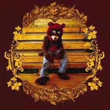
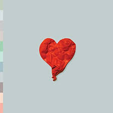

| Album Cover | Albulm Name | Release Date | Pitchfork Rating |
|---|---|---|---|
|  | The College Dropout | Febuary 10, 2004 | 8.2/10 |
| Late Registration | August 30, 2005 | 9.5/10 | |
 |
Graduation | September 11, 2007 | 8.7/10 |
|  | 808’s and Heartbreak | November 24, 2008 | 7.6/10 |
| My Beautiful Dark Twisted Fantasy | November 22, 2010 | 10/10 | |
| Watch the Throne | August 8, 2011 | 8.5/10* | |
| Yeezus | June 18, 2013 | 9.5/10 | |
 |
The Life of Pablo | February 14, 2016 | 9.0/10 |
| ye | June 1, 2018 | 7.1/10 | |
| Kids See Ghost | June 8, 2018 | 7.6/10* | |
| * =collab album |
While some people may say they miss the old kanye according to pitchfork Kanye’s music has only improved as time has continued. Which makes sense because he has spent more time recording/writing/producing his own musicOnly a genius would be able to single handedly produce this amount of consistently amazing albums